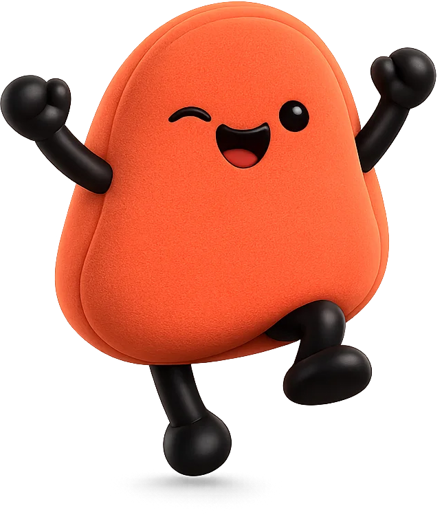
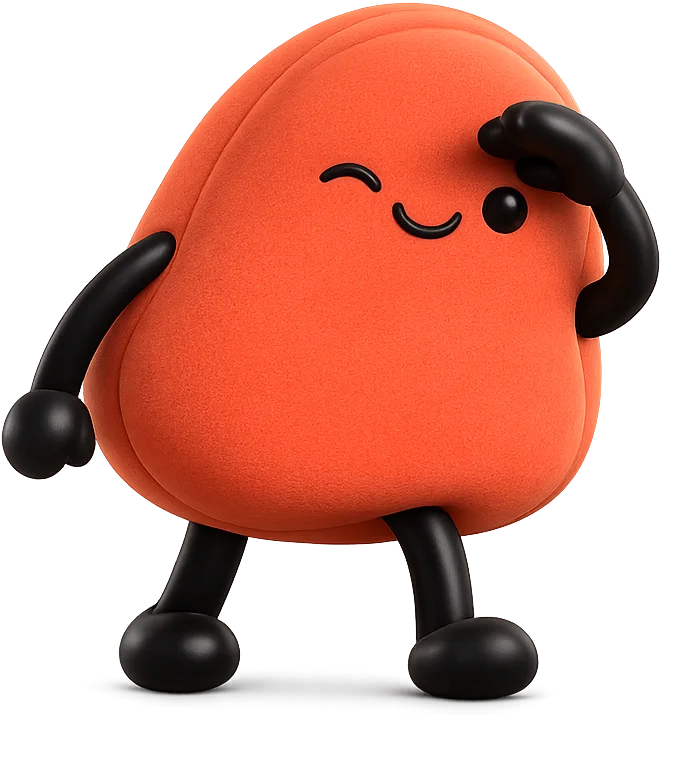

01 · background system — dark
02 · tilted panel + rim light
Your workspace,
one command.
Gmail · Calendar · GitHub
03 · statement card — dark
the execution layer
It tells you what
it's
about to do.
Then you decide.
04 · mascot on dark — alpha PNG

05 · statement card — cream
the execution layer
Then it
does it.
Gmail. Calendar. GitHub. One command.
06 · tilted panel — cream
Good morning.
3 meetings · 2 urgent · 4 PRs
07 · mascot on cream

08 · palette
#050505
void
#141312
panel
#E8593C
brand
#F5845E
mascot
#F5A623
amber
#FAF8F5
cream
#241B14
ink